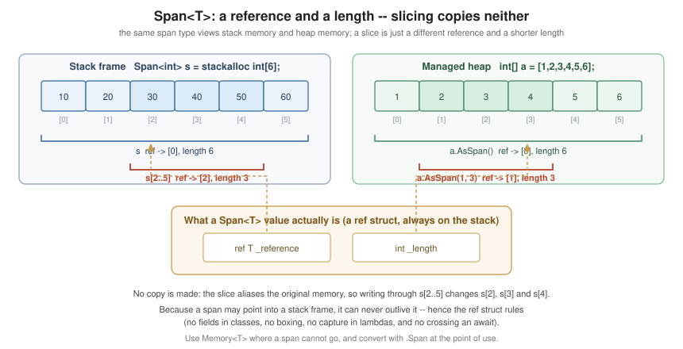

Unsafe Code, Spans and Performance
|
This content was generated with the assistance of AI and should be verified against the official documentation before being relied on in production. |
Most C# never needs this page. But parsers, serializers, network stacks, image and numeric code, and anything
on a hot path eventually want to work on memory in place rather than copying it, and .NET gives C# a
carefully-designed set of tools for that — Span<T> first and foremost, which delivers most of the benefit of
pointers with none of the danger. Genuine unsafe code is the last resort below that, and the page ends with
the preview work that is reshaping it.
The order of preference is worth stating up front: Span<T> → ref → Unsafe/MemoryMarshal → pointers.
Stop as soon as the problem is solved.
Span<T> and ReadOnlySpan<T>
A Span<T> is a view: a reference to the start of a contiguous region of memory plus a length. It does not
own the memory and never copies it. The region may live anywhere — on the stack, in a managed array, in an
unmanaged block — which is what makes a single method able to work with all three:
public static class SpanBasics
{
public static int Sum(ReadOnlySpan<int> values)
{
int total = 0;
foreach (int value in values)
{
total += value;
}
return total;
}
public static void Show()
{
int[] heap = [1, 2, 3, 4, 5];
Span<int> stack = stackalloc int[5] { 1, 2, 3, 4, 5 };
Console.WriteLine(Sum(heap)); // an array converts implicitly
Console.WriteLine(Sum(stack)); // so does a stack buffer
Console.WriteLine(Sum(heap.AsSpan(1, 3))); // and a slice of one, with no copy
}
}Slicing is the point. array[1..4] on a Span<T> produces another span over the same memory, in constant
time and with no allocation, where array[1..4] on an array allocates a copy:
public static class Slicing
{
public static (int Year, int Month, int Day) ParseDate(ReadOnlySpan<char> text)
{
// "2026-09-11" parsed without a single string allocation.
return (
int.Parse(text[..4]),
int.Parse(text.Slice(5, 2)),
int.Parse(text.Slice(8, 2)));
}
}
ReadOnlySpan<T> is the read-only form and should be the default for parameters — it accepts everything a
Span<T> does, plus string and read-only data. A ReadOnlySpan<char> parameter is the idiomatic way to write
a parsing API that neither allocates nor forces its callers to.
A useful special case: a ReadOnlySpan<byte> initialized from a const array of bytes is compiled into a
direct reference to the assembly’s data section, with no allocation at all:
public static class Literals
{
// No array is created; this points straight into the assembly metadata.
private static ReadOnlySpan<byte> Magic => [0x50, 0x4B, 0x03, 0x04];
public static bool IsZip(ReadOnlySpan<byte> header) => header.StartsWith(Magic);
}The ref struct Restrictions
Span<T> is a ref struct, which means it can only ever live on the stack. The compiler enforces that with a
set of rules that surprise everyone once:
-
It cannot be a field of a class, or of a non-
refstruct. -
It cannot be boxed, or converted to
object,dynamicor a non-ref-struct interface. -
It cannot be captured by a lambda or local function.
-
It cannot be used as a generic type argument — except where the type parameter is
allows ref struct(C# 13). -
It cannot cross an
awaitor ayield return.
The last one is the practical one: asynchronous code cannot hold a Span<T> across a suspension point. That is
what Memory<T> is for.
Memory<T> and ReadOnlyMemory<T>
Memory<T> is the heap-storable counterpart. It can be a field, captured in a closure, and held across an
await; you convert it to a span with .Span at the point of use:
public sealed class Reader(Stream stream)
{
private readonly byte[] _buffer = new byte[4096];
public async Task<int> CountZerosAsync(CancellationToken cancellationToken)
{
Memory<byte> memory = _buffer; // may live across the await
int read = await stream.ReadAsync(memory, cancellationToken).ConfigureAwait(false);
return Count(memory.Span[..read]); // convert to a span only where it is used
}
private static int Count(ReadOnlySpan<byte> data)
{
int zeros = 0;
foreach (byte value in data)
{
if (value == 0)
{
zeros++;
}
}
return zeros;
}
}Implicit Span Conversions (C# 14)
C# 14 made span conversions first-class in the language rather than a set of special cases in the BCL. The
compiler now recognises implicit conversions between arrays, Span<T>, ReadOnlySpan<T> and string as
standard conversions, which means they participate in overload resolution, generic type inference, and — most
visibly — in extension method lookup:
public static class SpanConversionsCSharp14
{
// C# 14: an extension method on ReadOnlySpan<T> is now found on an int[] receiver,
// because array-to-span is a standard implicit conversion.
public static int Second(this ReadOnlySpan<int> values) => values[1];
public static void Show()
{
int[] numbers = [10, 20, 30];
Console.WriteLine(numbers.Second()); // C# 14: resolves through the conversion
// The same conversion applies to type inference and overload resolution.
Console.WriteLine(Describe(numbers));
}
private static string Describe<T>(ReadOnlySpan<T> values) => $"{values.Length} items";
}The practical effect is that span-based APIs become as convenient to call as array-based ones, which removes most of the remaining friction from writing allocation-free code. The change also means an overload taking a span may now be chosen where an array overload was chosen before — a source-compatibility note worth knowing when upgrading.
stackalloc
stackalloc allocates a buffer in the current stack frame. It costs nothing to allocate and nothing to free,
and it disappears when the method returns — which is exactly why the size must be small and bounded:
public static class StackAllocation
{
private const int MaxStack = 256;
public static string ToHex(ReadOnlySpan<byte> data)
{
int needed = data.Length * 2;
// Small on the stack, large on the heap -- the standard hybrid pattern.
char[]? rented = needed > MaxStack ? System.Buffers.ArrayPool<char>.Shared.Rent(needed) : null;
try
{
Span<char> buffer = rented is null ? stackalloc char[MaxStack] : rented;
Span<char> target = buffer[..needed];
for (int i = 0; i < data.Length; i++)
{
data[i].TryFormat(target.Slice(i * 2, 2), out _, "x2");
}
return new string(target);
}
finally
{
if (rented is not null)
{
System.Buffers.ArrayPool<char>.Shared.Return(rented);
}
}
}
}Rules and cautions:
-
Assigned to a
Span<T>,stackallocneeds nounsafecontext (C# 7.3+); assigned to a pointer, it does. -
Never
stackallocinside a loop. The frame is not released until the method returns, so the allocations accumulate until the stack overflows — an uncatchable, process-killing failure. -
Keep the size a small constant (a few hundred bytes to a kilobyte), never a caller-controlled length.
-
The element type must be unmanaged.
ref Locals, ref Returns and ref Fields
A ref local is an alias for an existing storage location, not a copy. A ref return propagates such an alias
out of a method, letting a caller read and write through it:
public static class RefBasics
{
public static ref int Largest(int[] values)
{
int index = 0;
for (int i = 1; i < values.Length; i++)
{
if (values[i] > values[index])
{
index = i;
}
}
return ref values[index]; // an alias into the array
}
public static void Show()
{
int[] numbers = [3, 9, 4];
ref int largest = ref Largest(numbers);
largest = 0; // writes through the alias
Console.WriteLine(numbers[1]); // 0
// A readonly alias: no copy on read, no write allowed.
ref readonly int peek = ref numbers[0];
Console.WriteLine(peek);
}
}This is what makes CollectionsMarshal.GetValueRefOrAddDefault and List<T>'s span accessor able to update a
dictionary value or a struct element in place, rather than reading a copy, mutating it and writing it back.
A ref field (C# 11) lets a ref struct store such an alias — the feature Span<T> itself is built on:
public ref struct Cursor
{
private ref int _current;
private int _remaining;
public Cursor(Span<int> values)
{
_current = ref System.Runtime.InteropServices.MemoryMarshal.GetReference(values);
_remaining = values.Length;
}
public bool TryAdvance(out int value)
{
if (_remaining == 0)
{
value = 0;
return false;
}
value = _current;
_current = ref System.Runtime.CompilerServices.Unsafe.Add(ref _current, 1);
_remaining--;
return true;
}
}scoped constrains how far a ref or ref struct may escape. The compiler infers it in most cases; you write
it explicitly to promise that an argument will not outlive the call, which lets callers pass stack-allocated
data safely:
public static class Scoped
{
// `scoped` says: this span does not escape, so a stackalloc'd buffer is safe to pass.
public static int Consume(scoped ReadOnlySpan<char> text) => text.Length;
}unsafe and Pointers
An unsafe context enables pointer types. It requires <AllowUnsafeBlocks>true</AllowUnsafeBlocks> in the
project file, and it opts that code out of the runtime’s memory safety entirely:
public static unsafe class Pointers
{
public static int SumViaPointer(int[] values)
{
int total = 0;
// `fixed` pins the array so the GC cannot move it while the pointer exists.
fixed (int* start = values)
{
int* end = start + values.Length;
for (int* p = start; p < end; p++)
{
total += *p; // dereference
}
}
return total;
}
public static void MemberAccess()
{
Sample sample = new() { Value = 7 };
Sample* pointer = &sample; // address-of, on a local
Console.WriteLine(pointer->Value); // member access through a pointer
Console.WriteLine((*pointer).Value); // equivalent
Console.WriteLine(sizeof(Sample)); // size in bytes, no unsafe needed for unmanaged types
}
public struct Sample
{
public int Value;
}
}Key points:
-
A pointer may only target an unmanaged type — no references anywhere in its layout.
-
Pointer arithmetic is scaled by the element size:
p + 1advancessizeof(T)bytes. -
fixedis mandatory before taking a pointer into managed memory: without pinning, a garbage collection may move the object out from under the pointer. Keep thefixedblock short — pinning fragments the heap. -
stackallocassigned to a pointer, andfixed-size buffers, both requireunsafe.
public unsafe struct Packet
{
// A fixed-size buffer: 16 bytes inline in the struct, not a separate array object.
public fixed byte Header[16];
public int Length;
public byte FirstHeaderByte()
{
fixed (byte* header = Header)
{
return header[0];
}
}
}[InlineArray] (C# 12) covers most of what fixed-size buffers were used for, without unsafe and with span
support — see Attributes and Reflection.
Function Pointers
delegate* is a raw function pointer: a direct call with no delegate object, no invocation list and no
allocation. It is used for interop callbacks and in very hot dispatch loops:
public static unsafe class FunctionPointers
{
private static int Double(int value) => value * 2;
public static int ApplyTwice(delegate*<int, int> operation, int value) =>
operation(operation(value));
public static int Run() => ApplyTwice(&Double, 5); // 20
}The managed/unmanaged calling-convention forms (delegate* unmanaged[Cdecl]<int, int>) are what P/Invoke
callbacks use; see Native Interop.
Unsafe and MemoryMarshal
System.Runtime.CompilerServices.Unsafe and System.Runtime.InteropServices.MemoryMarshal provide the
low-level operations without pointer syntax, and without requiring unsafe at the call site. They are the
preferred tool where Span<T> alone is not enough:
using System.Runtime.CompilerServices;
using System.Runtime.InteropServices;
public static class MarshalHelpers
{
// Reinterpret a span of bytes as a span of ints -- no copy, no pointer.
public static ReadOnlySpan<int> AsInts(ReadOnlySpan<byte> bytes) =>
MemoryMarshal.Cast<byte, int>(bytes);
// Read a struct straight out of a byte buffer.
public static T Read<T>(ReadOnlySpan<byte> source) where T : struct =>
MemoryMarshal.Read<T>(source);
// A single struct viewed as the span of bytes that make it up.
public static Span<byte> AsBytes<T>(ref T value) where T : unmanaged =>
MemoryMarshal.AsBytes(new Span<T>(ref value));
// Bounds-check-free element access in a loop whose bounds are already proven.
public static int SumUnchecked(ReadOnlySpan<int> values)
{
ref int first = ref MemoryMarshal.GetReference(values);
int total = 0;
for (int i = 0; i < values.Length; i++)
{
total += Unsafe.Add(ref first, i);
}
return total;
}
}Unsafe.Add, Unsafe.As and Unsafe.SizeOf are exactly as dangerous as their names suggest: nothing checks
bounds or type compatibility. Reach for them only with a measurement in hand, and keep them behind a safe API.
Struct Layout
[StructLayout] controls how a struct’s fields are arranged — essential for interop, occasionally useful for
cache behaviour:
using System.Runtime.InteropServices;
[StructLayout(LayoutKind.Sequential, Pack = 1)]
public struct FileHeader
{
public uint Signature;
public ushort Version;
public ushort Flags;
}
[StructLayout(LayoutKind.Explicit)]
public struct FloatBits
{
[FieldOffset(0)] public float Value;
[FieldOffset(0)] public uint Bits; // the same four bytes, viewed as an integer
}LayoutKind.Sequential keeps declaration order (the default for interop); Auto lets the runtime reorder for
packing (the default for managed-only structs); Explicit with [FieldOffset] places every field by hand and
permits overlapping, which is a C-style union. Note that for the specific case above, BitConverter and
float.GetBits-style APIs are safer and just as fast.
Reducing Allocations
The techniques that matter most, roughly in order of impact:
using System.Runtime.CompilerServices;
public static class AllocationTechniques
{
// 1. Take spans, not strings/arrays, in parsing APIs.
public static bool StartsWithHeader(ReadOnlySpan<char> line) => line.StartsWith("HDR");
// 2. Format into a caller-supplied buffer instead of returning a new string.
public static bool TryFormat(int value, Span<char> destination, out int written) =>
value.TryFormat(destination, out written);
// 3. Use static lambdas so no closure object is created.
public static int CountEven(IEnumerable<int> values) => values.Count(static n => n % 2 == 0);
// 4. Use `string.Create` to build a string in one pass, with no intermediate.
public static string Repeat(char c, int count) =>
string.Create(count, c, static (span, value) => span.Fill(value));
// 5. Avoid boxing: generic constraints instead of `object` parameters.
public static T Max<T>(T a, T b) where T : IComparable<T> => a.CompareTo(b) >= 0 ? a : b;
}Custom Interpolated String Handlers
An interpolated string handler lets a library decide how $"…" is built, including skipping the work
entirely when the result would be discarded. This is how Debug.Assert and ILogger avoid formatting a
message that will never be shown:
using System.Runtime.CompilerServices;
[InterpolatedStringHandler]
public ref struct ConditionalLogHandler
{
private System.Text.StringBuilder? _builder;
public ConditionalLogHandler(int literalLength, int formattedCount, bool enabled, out bool shouldAppend)
{
shouldAppend = enabled;
_builder = enabled ? new System.Text.StringBuilder(literalLength + formattedCount * 8) : null;
}
public void AppendLiteral(string value) => _builder?.Append(value);
public void AppendFormatted<T>(T value) => _builder?.Append(value);
internal string Result => _builder?.ToString() ?? string.Empty;
}
public static class ConditionalLogging
{
public static void LogIf(
bool enabled,
[InterpolatedStringHandlerArgument(nameof(enabled))] ref ConditionalLogHandler message)
{
if (enabled)
{
Console.WriteLine(message.Result);
}
}
public static void Use(int id)
{
// When `enabled` is false, `Describe(id)` is never called and nothing is formatted.
LogIf(enabled: false, $"processing {Describe(id)}");
}
private static string Describe(int id) => id.ToString();
}The out bool shouldAppend constructor parameter is the mechanism: returning false tells the compiler to skip
every AppendFormatted call, and therefore the argument expressions inside them.
Preview: The Updated Memory-Safety Model (C# 15)
|
The snippets in this subsection describe C# 15 / .NET 11 preview features. They are written from the
official feature specifications and the What’s new in C# 15 documentation; unlike every other example on this
page they were not compiled against a released SDK, because .NET 11 is still in preview. They require a
.NET 11 preview SDK and |
C# 15 revisits the boundary between safe and unsafe code, on the observation that unsafe today is far too
coarse: it switches off the compiler’s safety analysis for a whole region in order to permit one pointer
operation. The proposed model separates "this uses pointers" from "this is unverifiable".
Three related changes, as specified:
-
Pointer relaxations. Several operations that required an
unsafecontext, but that the compiler can in fact verify, no longer do — notably declaring pointer-typed locals and parameters and takingsizeofof an unmanaged type, where no unverifiable dereference is involved. -
unsafe(expr). An expression-scoped form ofunsafe, so a single unverifiable operation can be marked as such instead of opening anunsafeblock around the surrounding code. -
safe. A modifier marking a declaration as not requiring an unsafe context, so it stays callable from safe code; it introduces no safe context of its own and has no block or expression form. The proposal requires it onexternmembers and on explicit-layout fields that overlap references.
public class Buffer15
{
// Under the C# 15 model a pointer-typed field no longer needs an `unsafe` context.
private byte* _data;
private int _length;
public int Length => _length;
public byte ReadAt(int index)
{
// `unsafe(expr)` marks exactly the unverifiable operation, not the whole method.
return unsafe(_data[index]);
}
}Until .NET 11 ships, unsafe blocks plus Unsafe/MemoryMarshal remain the supported approach; see
C# Versions and What’s New for the full
C# 15 feature list and timeline.
Measuring
Never optimise on intuition. BenchmarkDotNet is the standard .NET micro-benchmark harness: it handles
warm-up, runs in a separate optimized process, reports confidence intervals, and — with
[MemoryDiagnoser] — reports allocations per operation, which is usually the number that matters:
dotnet new console -o Benchmarks
cd Benchmarks
dotnet add package BenchmarkDotNet
dotnet run -c Release # benchmarks must be run in Release, never under a debugger// Sketch of a BenchmarkDotNet harness (the package is not referenced by this documentation build).
// [MemoryDiagnoser]
// public class ParsingBenchmarks
// {
// private readonly string _input = "2026-09-11";
//
// [Benchmark(Baseline = true)]
// public int Substring() => int.Parse(_input.Substring(0, 4));
//
// [Benchmark]
// public int Span() => int.Parse(_input.AsSpan(0, 4));
// }
public static class BenchmarkNote
{
public static string Guidance =>
"Measure in Release, outside the debugger, with MemoryDiagnoser enabled.";
}For whole-application work, dotnet-counters and dotnet-trace show where the time and the allocations
actually go — see Build and Tooling.
Practical Guidance
-
Default to
ReadOnlySpan<T>parameters in parsing and formatting APIs; they cost callers nothing and remove allocations. -
Use
Memory<T>where a span cannot go — fields, closures, acrossawait. -
stackalloconly small, constant-bounded buffers, never in a loop; fall back toArrayPool<T>above a threshold. -
Prefer
Unsafe/MemoryMarshalto raw pointers; preferSpan<T>to both. -
Keep
fixedblocks tiny, and confineunsafecode to a small, well-tested layer behind a safe API. -
Measure with BenchmarkDotNet before and after. An "optimisation" without a measurement is a guess.
See Also
-
Memory Management and Disposal — the GC, and
ArrayPool<T>/MemoryPool<T>. -
Structs and Value Types —
ref structandreadonly structin their own right. -
Native Interop — pointers, marshalling and function pointers at the P/Invoke boundary.
-
Attributes and Reflection —
[InlineArray]and[SkipLocalsInit]. -
C Reference — the pointer model C# borrows here.